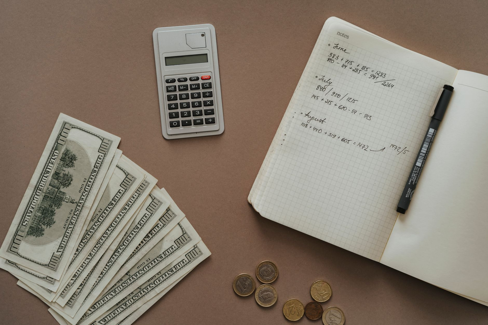

Silver investing can seem daunting, especially for those starting with a limited budget. Many perceive it as an exclusive pursuit for the wealthy, but constructing a silver reserve is entirely achievable with a strategic and consistent approach. At Fused Distribution, we provide a comprehensive range of silver bullion and coins catering to investors of all levels, and we advocate for a methodical plan to steadily build your reserves over time. This guide outlines how to establish a sustainable silver investment strategy, even with modest monthly contributions.

What to Know About Silver Investing
Silver is frequently considered a safe-haven asset, exhibiting a tendency to maintain value during periods of economic instability. Unlike stocks and bonds, silver possesses intrinsic value - it’s a tangible, physical metal - making it a compelling long-term investment. However, like any investment, it carries inherent risks. Silver prices are subject to fluctuations, and it's crucial to understand the various methods for acquiring and safeguarding it. We recommend initiating with physical bullion, such as American Eagle Silver Eagles or Canadian Maple Leafs, as a tangible and easily divisible investment. These coins offer immediate liquidity and a clear representation of your holdings.
How to Get Started: Small Steps, Significant Returns
Building a silver reserve is fundamentally about consistency. Avoid attempting to amass a fortune overnight. Small, regular investments are the foundation of a successful strategy. Here’s a step-by-step approach to guide you: 1. Determine Your Budget: Establishing a realistic budget is essential. Honestly assess how much you can comfortably allocate to silver each month. Even a modest investment of $50 or $100 per month can accumulate significantly over time. Consider this an investment in your long-term financial security. 2. Choose Your Acquisition Method: Several avenues are available for acquiring silver. Purchasing physical bullion directly from Fused Distribution offers a straightforward and transparent process. Alternatively, reputable online dealers provide a convenient option. For those seeking a more passive approach, Exchange Traded Funds (ETFs) that track silver prices can be considered, though they come with their own complexities, including tracking fees and potential dilution of ownership. 3. Start Small, Buy Regularly: Don’t feel pressured to make large, immediate purchases. Begin with a smaller amount - perhaps $50-$100 - and commit to purchasing it consistently each month. This strategy, known as dollar-cost averaging, mitigates risk by averaging out your purchase price over time, smoothing out the impact of short-term price fluctuations. 4. Diversify Your Holdings: Don’t concentrate all your investment capital in a single coin or bar. Diversifying your silver holdings across different types of coins or bars reduces the impact of any individual coin’s price volatility. For example, owning a mix of American Eagles, Canadian Maple Leafs, and smaller bullion bars can offer a more balanced portfolio. 5. Secure Storage: Once you’ve acquired your silver, establishing a secure storage solution is critical. Options include a home safe, a bank safe deposit box, or a professional vault service. We recommend a secure, insured storage solution to protect your investment from theft, damage, or loss.

Building a Monthly Silver Plan: Realistic Examples
Let’s explore some realistic scenarios based on varying monthly budgets:
- $50/Month: With a $50 monthly investment, you could accumulate approximately 10-15 ounces of silver bullion over a year. This represents a solid foundation for beginners.
- $100/Month: Investing $100 per month allows for the accumulation of roughly 20-30 ounces of silver annually, providing a more substantial reserve.
- $200/Month: A consistent $200 monthly investment could result in 40-60 ounces of silver gained over a year, significantly bolstering your reserves and demonstrating the power of compounding returns.
Common Mistakes to Avoid
Several common pitfalls can derail your silver investment goals. Awareness of these potential issues is crucial for success. 1. Buying High, Selling Low: Attempting to time the market is notoriously difficult and rarely successful. Don’t succumb to panic selling when prices are elevated. Stick to your established investment plan and continue purchasing regularly, regardless of short-term price fluctuations. 2. Neglecting Storage Costs: Storing your silver can incur expenses, such as safe rental fees or bank storage charges. Factor these costs into your overall budget. 3. Overlooking Insurance: Ensure your silver is adequately insured against theft or loss. This is a vital step in protecting your investment. Consider a rider on your homeowner’s insurance policy or a separate insurance policy specifically for precious metals. 4. Emotional Investing: Don’t allow fear or greed to drive your investment decisions. Maintain discipline and adhere to your strategy, avoiding impulsive purchases based on market sentiment. 5. Focusing Solely on Price: While price is an important consideration, it’s not the only factor. Evaluate the quality of the silver, the reputation of the dealer, and the security of your storage solution.
Understanding Silver Price Volatility
Silver prices are influenced by a complex interplay of factors, including economic conditions, industrial demand, and investor sentiment. Historically, silver has demonstrated a correlation with inflation, often acting as a hedge against currency devaluation. In 2022, silver prices experienced a significant surge, largely driven by geopolitical uncertainty and supply chain disruptions. However, prices have since fluctuated considerably. It’s essential to recognize that silver prices are inherently volatile and subject to unpredictable swings.
Maximizing Your Returns: A Long-Term Strategy
Building a silver reserve is a long-term endeavor. Don’t anticipate rapid wealth accumulation. Focus on consistent, disciplined investing. Consider holding your silver for several years or even decades to benefit from the potential for long-term appreciation.
The Importance of Physical Silver
While ETFs offer a convenient method for investing in silver, holding physical bullion provides greater control, transparency, and peace of mind. You physically own the metal, which can be reassuring during periods of market volatility. Also, physical silver can be used as collateral for loans, offering an additional potential benefit.
Fused Distribution: Your Partner in Silver Investing
At Fused Distribution, we understand the importance of establishing a solid silver reserve. We offer a diverse selection of high-quality silver bullion and coins, competitive pricing, and secure shipping services. We also provide expert advice to assist you in making informed investment decisions. Browse our extensive collection today and start on your silver investment journey: {Link to Fused Distribution Silver Products}
Looking Ahead: Silver’s Future Potential
While predicting the future with certainty is impossible, many analysts anticipate that silver will continue to be a valuable investment in the years to come. Increasing industrial demand, particularly within the renewable energy sector, could drive silver prices higher. Also, as concerns regarding inflation and economic instability persist, silver’s safe-haven appeal is likely to remain strong. We recommend periodically reviewing your investment strategy and adjusting it to reflect evolving market conditions. Don’t hesitate to contact us with any questions or to discuss your specific investment goals.
Related
- Silver Recycling And Scrap Recovery Market
- Silver Reserve Plan: What It Is and How It Works
- Largest Silver Producing Countries In The World
Read next: Silver Recycling And Scrap Recovery Market